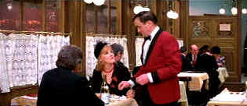

| Victor/Victoria (SE) / A, B+ |
| Warner/1982/133/ANA 2,35 |
Victor/Victoria may well be gifted
farceur Blake Edwards' most wholly satisfying flick. It opens in a very
classy way with lovely light Henry Mancini movie music. Edwards' visual
sense for comedy is unfailingly hilarious. His cutting maximizes the comic
effect. Here's a director who knows his way around comedy, backwards and
forwards. He is a genius. The comic pratfalls are choreographed with the
inspiration of the great silent comics.
The central comic conceit of Victor/Victoria
is a woman pretending to be a man pretending to be a woman. Down and out
Brit singer Victoria Grant has reached the final stages of desperation as
she hunts for a gig in glittering 1920s Paris. Gay night club performer
Carroll (Toddy) Todd is letting his love life undermine his career. With
snow flakes falling gently on a Paris street, Toddy peers into a
restaurant window and spies Victoria. When Toddy joins her at table, its
the beginning of a perfect friendship.
 |
|
Dinner for two is on
Victoria. ©Warner
|
When inspiration ceases Toddy and he suddenly
sees the possibilities for Victoria's new career unfold in his imagination,
it's pure screen magic. Of course, it's not exactly what Victoria
imagined. Add a tough Chicago night club owner with a gangster reputation,
a daffy moll, a beefy bodyguard, and the ingredients add up to one
hilarious moment after another.
The restaurant scene is a perfect example of
Edwards' brilliant comic touch. The lines and situations are funny, the
actors sublime, but the cutting enhances the effect. The timing is
perfect. And isn't it wonderful that Toddy asks Victoria "What ever
happened to the Bath Opera company?" as they sit face to face in a
hot bath tub. It's a small detail, but adds richness and texture to the
screenplay. A good an example of the wonderful comic writing is the first
time the meatball comes up. The second time the meat ball comes it's
played with by Toddy and it's very funny again, and the third time the
meat ball comes up is an intimate, almost sentimental way, and it works
again: you see, the meat ball is used like a juggler's ball, lightly kept
airborne with perfect rhythms by Edwards. Take another scene to savvy the
depth of the Edwards genius. Norma Cassady and Toddy are in a back room at
the party. Check out the lighting: Norma is shot in a white light that
emphasizes her pearlescence skin and the whiteness of the bleached
blonde hair. At the same time, Toddy has a pink glow on him. Here he is
telling her that he's gay and he's got the pink light on him. It's just
another brilliant touch that likely goes without obvious notice but helps
create the feelings Edwards wants and adds layers to the comedy. The comic
choreography is almost done like dance. It's beautiful comic movement and
it is musical. The music integrates with delightful farce/ballet in
the hotel to brilliant effect. Sly notes echo ginger silent steps.
Edwards casting acumen is surgically hilarious.
Robert Preston is truly miraculous in the role of Toddy. He's graceful,
he's smooth, he's having the time of his acting career. Just appreciate
the way Robert Preston savors his dialogue. He delivers his lines with
savory relish. I can't give Preston enough credit for the inspired acting
as Toddy. This is up there with the best work Julie Andrews has done. She
is an absolutely terrific comedienne and Victoria gives her the
opportunity to combine her singing and comic talent in a cunningly
delicious performance. You've gotta belief that any character that would
sell herself for one solitary tough meat ball is worthy of great
admiration. The virile, manly James Garner is the perfect choice as King
Marchand. When he doubts his virility, even for a moment, it plays much
funnier because of that screen presence. Alex Karas, the former Detroit
Lions lineman, as King Marchand's bodyguard is a droll choice by Edwards.
And Lesley Ann Warren is a explosion of blonde bimbosity. Graham Stark is
terrific as the waiter. Peter Arne as night club owner Labisse reminds one
of Herbert Lom in the Pink Panther series.
The wonderful art deco production design glistens
like the sparkling dialogue. Victor/Victoria as such a natural flow
that it moves from one section to the next so naturally that you don't
even realize a new act has begun. It is such a great roadmap for comedy.
The choreography on the Jazz Hot Lady number almost looks like it
could have been done by Bob Fosse. It's really very good. Mancini's music
consistently moves in rye rhythms embellishing the comedy but never
upstaging it.
The majority of image on Victor/Victoria
is happily in excellent shape, there's a slight vertical scratch in the
wonderful restaurant scene and a few specs of dirt on the elements, but
the majority of the image is in very fine shape. Color saturation is
excellent. Perhaps it might have been a tad sharper. Black levels
are excellent. Lighting details are very well delivered. Good overall
light output and contrast range is wide. The remastered Dolby Digital
5:1 audio is very clean.
Andrews and Edwards are a terrific audience on
the special edition commentary. They laugh at the right moments and it's
clear they are enjoying themselves. If not perfectly consistent, it's a
rich and warm commentary, generous in its sharing the joy of the
experience of Victor/Victoria. There's a very funny moment in the
hotel after the triumphant debut with Victoria and Toddy in bed singing
and sure enough it seems like Preston add-libs the best line, and it's
nice to have the confirmation on the commentary. |
|
|
|

Selections from the Feature
Archive include articles on Akira Kurosawa, Blonde Bimbos, Frank Darabont, Steven Culp, John Herzfeld or Vietnam: The Hollywood Pariah, and many
more....
OSCAR© WINNERS ON AND OFF THE DVD SHELF.

Best Picture Oscar© winners are well-represented on DVD, but many actor
and actress winners are DVDMIA.

The Movie Poster Archive
includes extensive poster images from the films of stars like Susan
Hayward, Kirk Douglas, Katharine Hepburn and many more. Our featured
star is Danny Kaye.

 Have you visited Home Theater Talk
lately? One of the friendliest places on the Net for Home Theater and DVD
discussion, you can get help for installation problems or simply share
your opinions with other Vidiots. Have you visited Home Theater Talk
lately? One of the friendliest places on the Net for Home Theater and DVD
discussion, you can get help for installation problems or simply share
your opinions with other Vidiots.

DVD reviews for women
from a woman's point of view

Maximizing home theater sound and image featuring quality
interconnects and speaker wire.

Cinemedia is the largest film and media directory with
over 25,000 links.

DVD Price Search
Allows you to create a "Comparison Cart" filled with
the DVD titles that you are interested in buying.

Lady Eve, The (SE) A,C+

Wonderful classic comedy from writer/director Preston Sturges. Henry Fonda
and Barbara Stanwyck star.
|